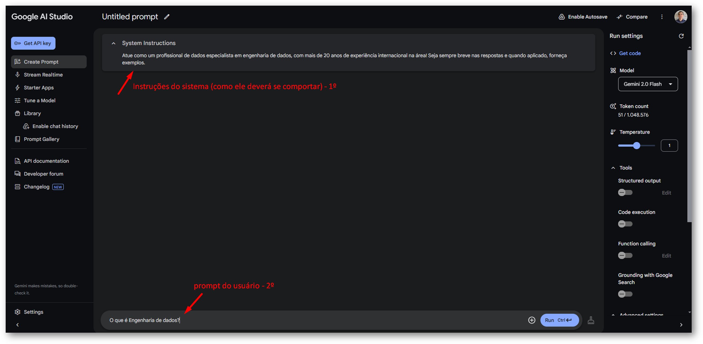
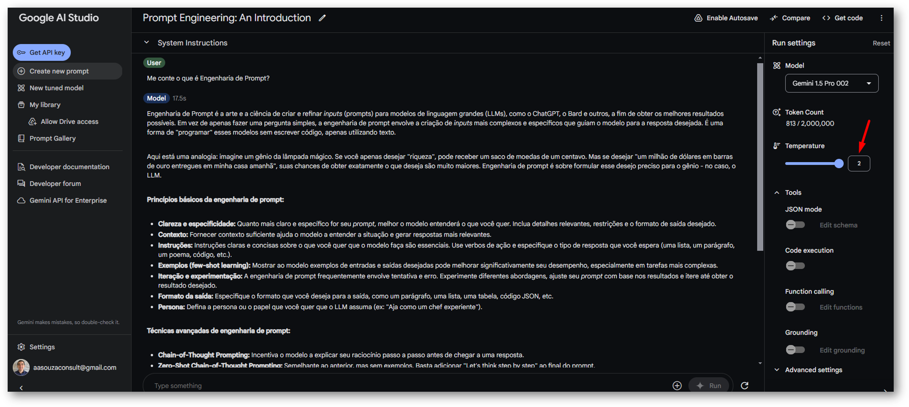
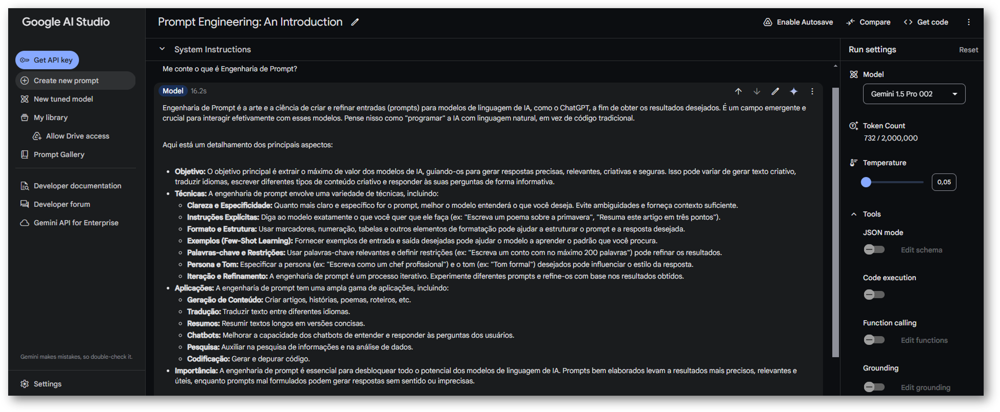
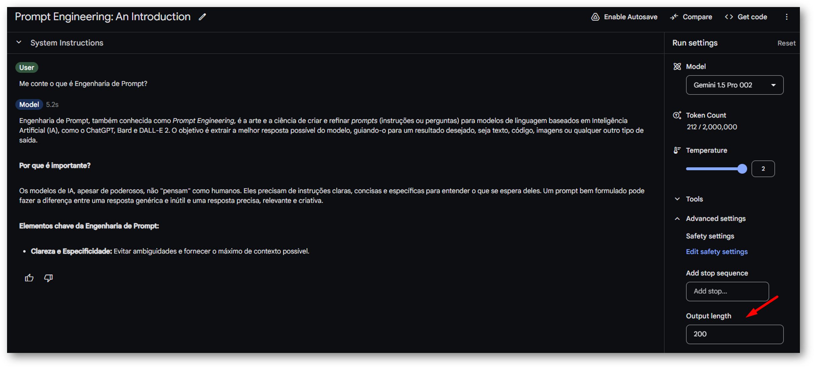
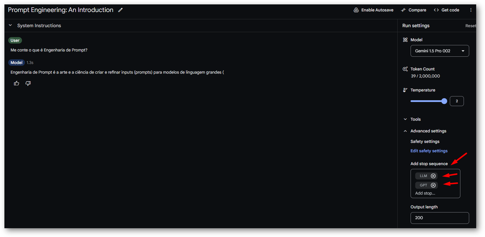
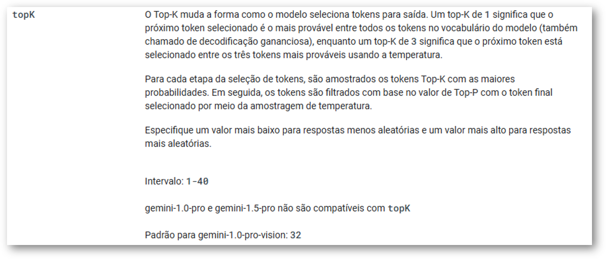
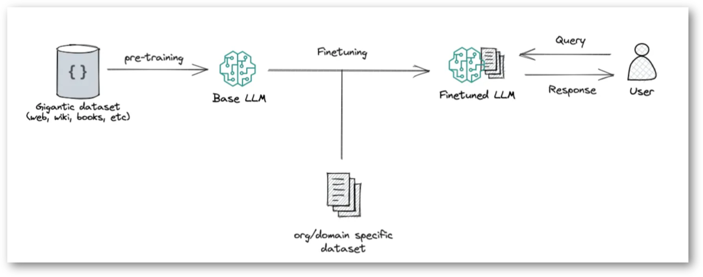

Prompt de Sistema (System Instructions)
O parâmetro System Instructions define diretrizes para o comportamento do modelo, orientando seu tom, estilo de resposta e restrições. Ele garante que a IA siga um perfil específico ao interagir.
Temperature
Ajusta a criatividade das respostas geradas pelo modelo. Um valor mais alto incentiva respostas mais inovadoras e menos previsíveis. Mais informações.
Exemplo: Temperatura Maior (mais criativo)
Exemplo: Temperatura Menor (mais direto)
Max Tokens
Define o limite máximo de tokens (palavras ou partes de palavras) para a resposta gerada, garantindo que o conteúdo produzido não exceda um comprimento específico.
Stop Sequences
Palavras ou símbolos que indicam ao modelo quando encerrar a geração de texto, permitindo um maior controle sobre o resultado final.
Top-k e Top-p
Top-k: Limita o número de palavras (ou tokens) que o modelo considera ao gerar a próxima palavra. Números menores tornam a resposta mais precisa; números maiores deixam o modelo explorar mais. Mais informações.
Top-p: Considera palavras até que a soma das suas probabilidades atinja um certo limiar, permitindo mais variação. Mais informações.
Exemplo: Top-k (não compatível com o modelo utilizado aqui)
Exemplo: Top-p Maior (mais palavras)

Exemplo: Top-p Menor (menos palavras)

Retrieval-Augmented Generation (RAG)
A técnica aprimora os resultados de um LLM ao integrar informações específicas e atualizadas, sem a necessidade de alterar o modelo de IA subjacente.
Enriquece seus prompts com informações/documentos da sua empresa... Mais informações.
Fine-Tuning
É como dar um "treinamento especial" para que ele se torne especialista em uma tarefa específica. Isso permite que o modelo aprenda a realizar tarefas complexas com mais precisão e criatividade, como escrever textos no estilo de um autor específico ou gerar código de programação para diferentes aplicações.
Exemplo: Dá para testar por aqui

Referências
- 🎯 RAG — Retrieval-Augmented Generation
- 🔥 Como a Temperature influencia as respostas de um Modelo de Linguagem?
- 🎲 Como o Top-p influencia as respostas de um Modelo de Linguagem?
- 🔢 Como o Top-k influencia as respostas de um Modelo de Linguagem?
- 🗣️ Explicando o funcionamento dos LLMs de uma forma simples!
- 📚 Tudo o que você precisa saber sobre LLM (Large Language Model)
- ⚖️ Comparando capacidades de LLMs (Large Language Models)
- 💬 GenAI — O que é Engenharia de Prompt?
- 💻 Aplicações da IA Generativa